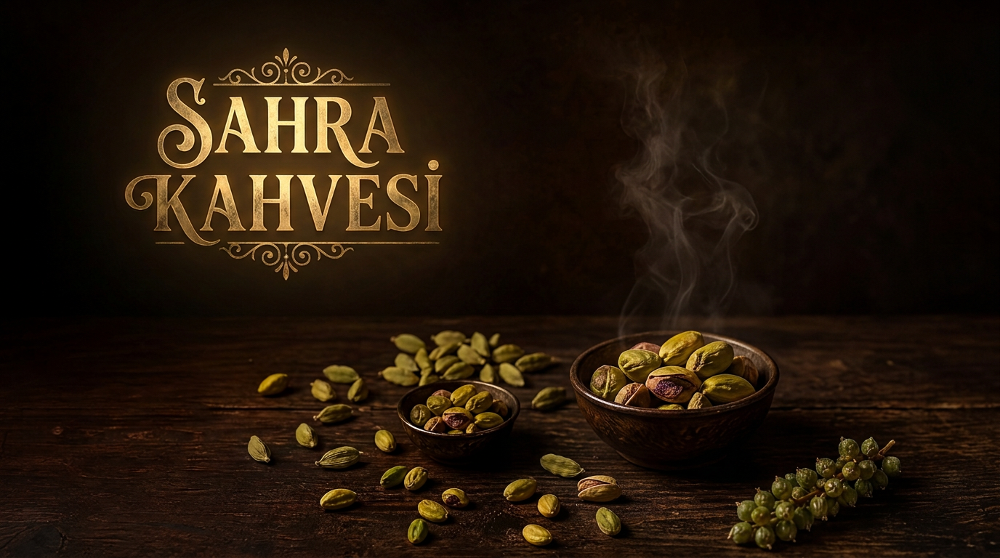

Fincanların Gizli Hazinesi: Kakulenin Büyüleyici ve Mucizevi Gücü

Baharatlar dünyasında bazı tatlar vardır ki, sadece bir aroma verici olmanın çok ötesine geçerek girdikleri her şeyi adeta sanatsal bir başyapıta dönüştürürler. İşte kakule, tam da bu seçkin ve ulaşılamaz zirvenin ta kendisidir. "Baharatların Kraliçesi" unvanını ardına kadar hak eden bu eşsiz mucize, bin yıldır sarayların, doğunun en köklü kültürlerinin ve şimdi de Sahra Kahvesi’nin vazgeçilmez imza dokunuşudur.
Neden Kakule? Onu Bu Kadar Eşsiz Kılan Nedir?
Kakule; zencefilgiller ailesinin en asil, en aromatik ve en değerli üyesidir. İçerdiği yoğun ve ferahlatıcı uçucu yağlar sayesinde, kahve çekirdeğiyle buluştuğu an ortaya adeta duyusal bir şölen çıkar. Sıradan kahve deneyimlerinden sıkılanlar için kakule, yudumladığınız ilk andan itibaren damakta bıraktığı o kadifemsi, hafif tatlımsı ve ferahlatıcı izle adeta bağımlılık yaratır.
Sadece tadıyla değil, doğanın sunduğu en büyük şifa kaynaklarından biri olmasıyla da bilinir. Kan şekerini dengede tutmaktan tansiyonu düzene sokmaya, migren ağrılarını hafifletmekten ağız kokusunu yok etmeye kadar sınır tanımayan bir güce sahiptir.
Sahra Kahvesi Harmanında Kakulenin Muazzam Gücü
- Kan Şekeri ve Diyabet Desteği: Vücuttaki glikoz metabolizmasını destekleyerek kan şekerinin dengelenmesine yardımcı olur, insülin direncine karşı doğal bir kalkan oluşturur.
- Tansiyon Dengesi ve Damar Sağlığı: İçerdiği yüksek potasyum ve magnezyum mineralleri sayesinde kan basıncını (tansiyonu) dengeleyerek kalp ve damar sistemine mükemmel bir koruma kalkanı sağlar.
- Migren ve Baş Ağrısı Düşmanı: Güçlü antioksidan ve yatıştırıcı özellikleri sayesinde sinir sistemini rahatlatır, migren ve inatçı baş ağrılarının hafiflemesine destek sağlar.
- Kusursuz Nefes ve Ağız Kokusu Çözümü: Doğal antibakteriyel yapısı sayesinde ağızdaki bakterileri etkisiz hale getirerek gün boyu taze, tertemiz ve mis kokulu bir nefes sunar.
- Güçlü Yağ Yakıcı Etki: Metabolizmayı hızlandırıcı ve termojenik özellikleriyle vücuttaki yağ yakımını zirveye taşır, formda kalmanızı sağlar.
- Kalp ve Sindirim Sistemi Dostu: Kan dolaşımını düzenleyerek kalbi korur; şişkinlik, hazımsızlık ve sindirim problemlerini anında bertaraf eder.
- Saf ve Katkısız: Sahra Kahvesi olarak hiçbir yapay aroma kullanmadan, en kaliteli kakule tanelerini özenle seçip kahvemizin kalbine işliyoruz.
Sahra Kahvesi ve Kakulenin Kusursuz Harmanı
Biz Sahra Kahvesi'ni tasarlarken amacımız sadece kahve satmak değil; kullanıcımıza her fincanda unutulmaz bir deneyim, kusursuz bir asalet ve üst düzey bir sağlık sunmaktı. İşte bu yüzden formülümüzün başrolünü kakuleye verdik. En nitelikli Arabika çekirdeklerinin menengiçle olan o toprak kokulu kucaklaşmasını, kakulenin o muazzam şifası ve ferahlığıyla taçlandırdık.
Eğer bugüne kadar Sahra Kahvesi'ni kakule dokunuşuyla denemediyseniz, aslında kahve dünyasının hem en büyük lezzet sırrından hem de en büyük şifa kaynağından hala mahrumsunuz demektir. Bir fincan Sahra Kahvesi demleyin; gözlerinizi kapatın ve kakulenin o eşsiz rayihasının bedeninizi ve ruhunuzu yenilemesine izin verin. Vazgeçemeyeceksiniz!